Executive Summary
Time & Offense
Examining how incident volume and offense composition changed over the study period.
Monthly Crime Incidents
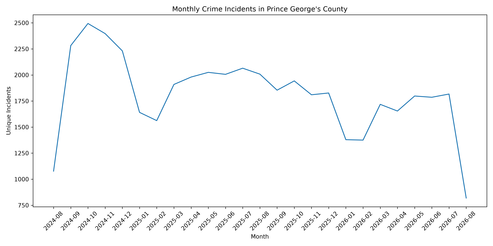
Crime Incidents by Offense
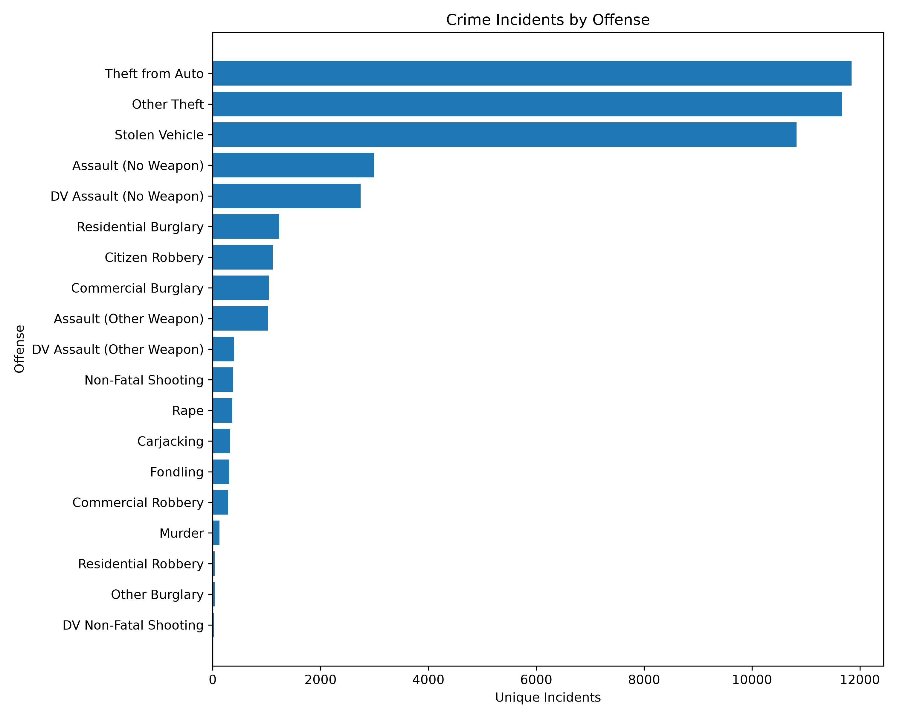
Monthly Trends for Top 5 Offenses
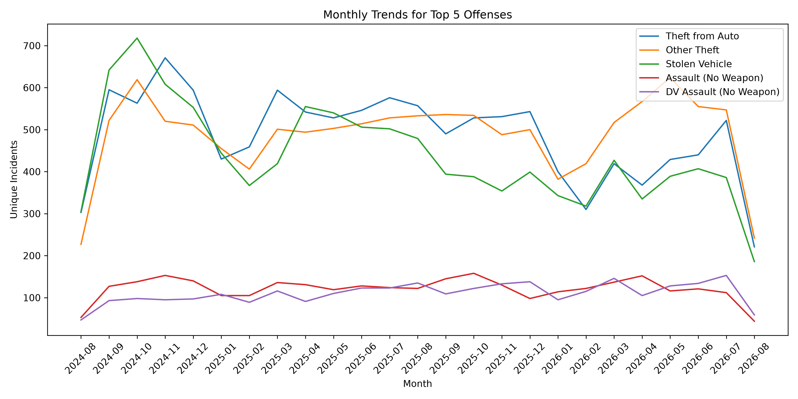
Geography
Identifying geographic areas with the highest concentrations of recorded incidents.
Incidents by Police Division
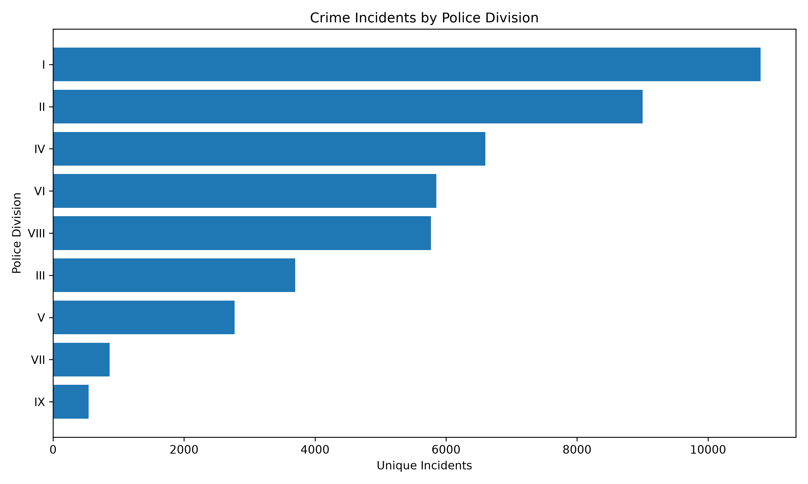
Incidents by Municipality
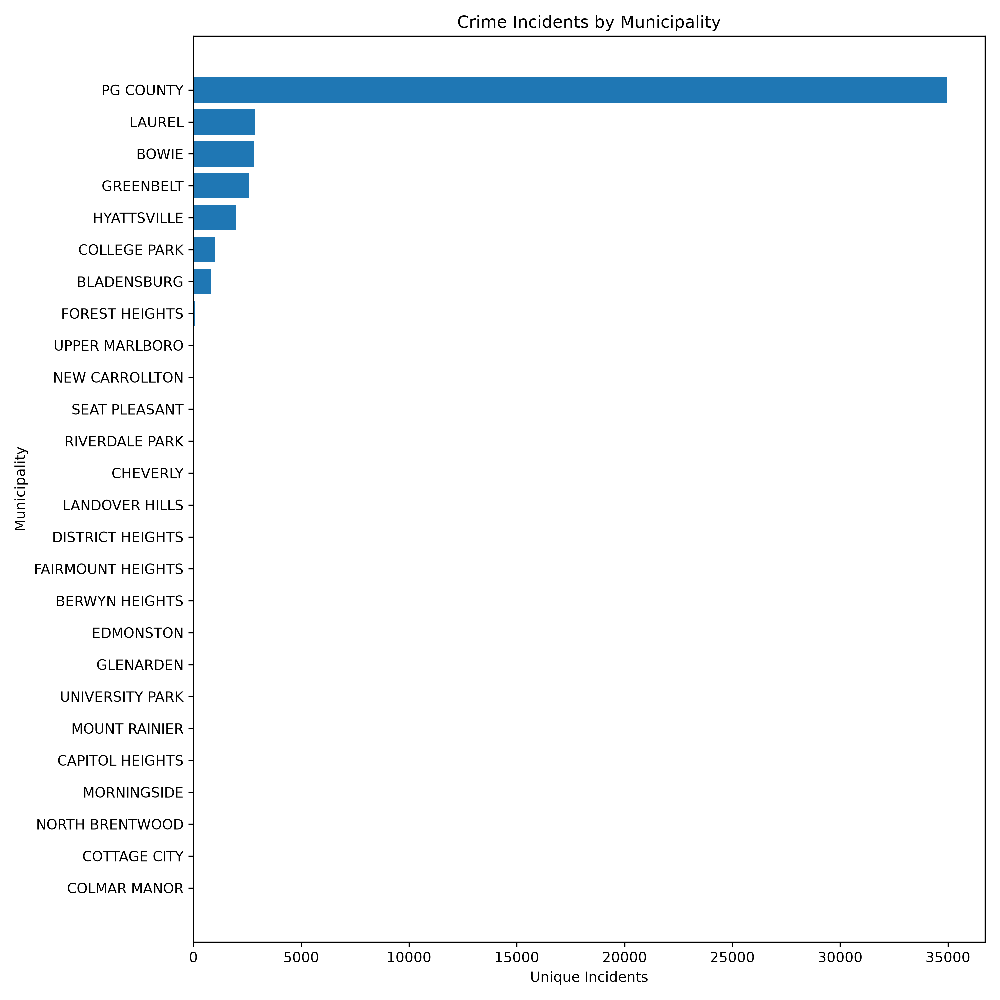
Top 10 Police Beats
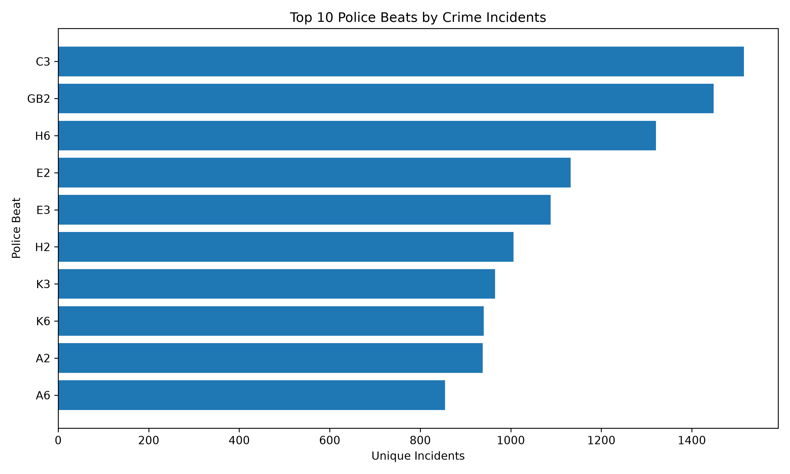
Top 10 Reporting Areas
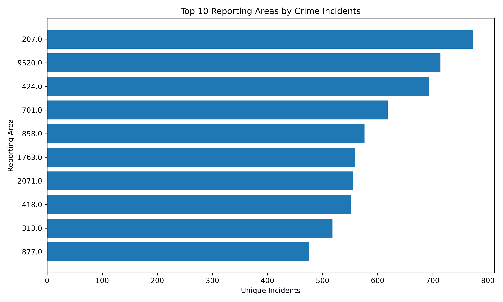
Top 10 ZIP Codes
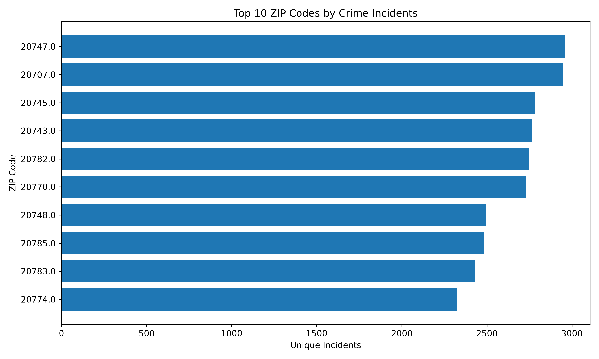
Context
Examining when and where incidents occur to identify recurring contextual patterns.
Incidents by Day of Week
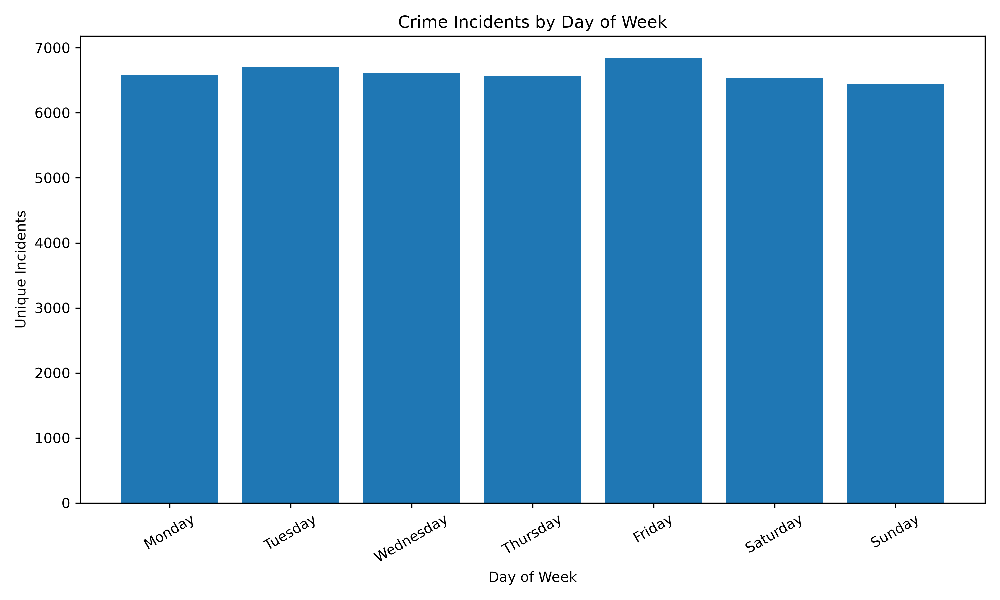
Incidents by Hour
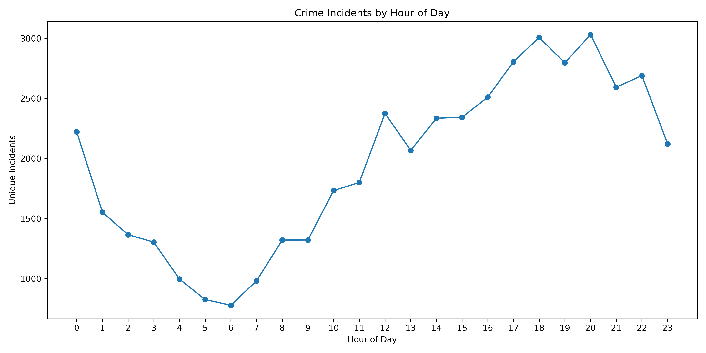
Incidents by Month
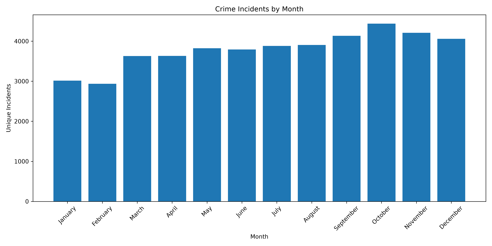
Top Location Types
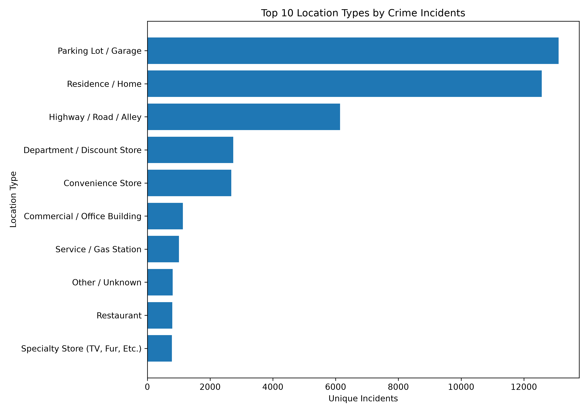
Top Offenses by Location
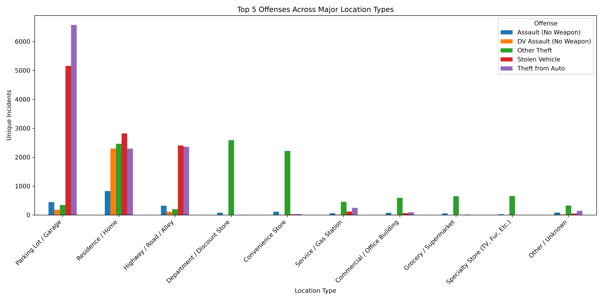
Data Preparation
The raw dataset contained 50,095 records. Exact duplicate rows were removed, resulting in 48,501 records.
- 1,594 exact duplicate rows removed
- 11 invalid "Copy of" case-number records identified
- 61 incidents have an unknown crime-against category
- 99 records are missing a ZIP code
- 3,111 records are missing a reporting area
- 1 record is missing a police beat
Missing geographic values were retained rather than artificially assigned, preserving the integrity of the original incident records.
Analytical Approach
Time-Series Analysis
Incident counts were aggregated by month, day of week, and hour to identify temporal patterns and changes.
Offense Analysis
Incidents were grouped by offense type and counted using unique case numbers.
Geographic Analysis
Incident concentrations were examined across divisions, beats, reporting areas, municipalities, and ZIP codes.
Contextual Analysis
Location type, time of day, day of week, and offense type were examined together to identify recurring patterns.